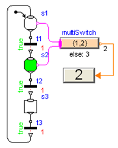

An important practical aspect of state machines is the ability to assign values and expressions to variables depending on the state of the machine. In StateGraph2, a number of graphical components have been added in this package (= Modelica_StateGraph2.Blocks) to facilitate usage in a safe and intuitive way. Since these are just input/output blocks and will also be useful in another context, it is planned to add them to the Modelica Standard Library. Some usage examples are given here in the tutorial, e.g., the example shown in the Figure below.

| Name | Description |
|---|---|
| MathBoolean | Blocks with input and output signals of type Boolean |
| MathInteger | Blocks with input and output signals of type Integer |
| MathReal | Blocks with input and output signals of type Real |
| BooleanFunctions | Functions with Boolean inputs (shall be included in Modelica Standard Library) |
| Interactive | Interactive components |
| Interfaces | Public interface definitions (shall be included in Modelica Standard Library) |